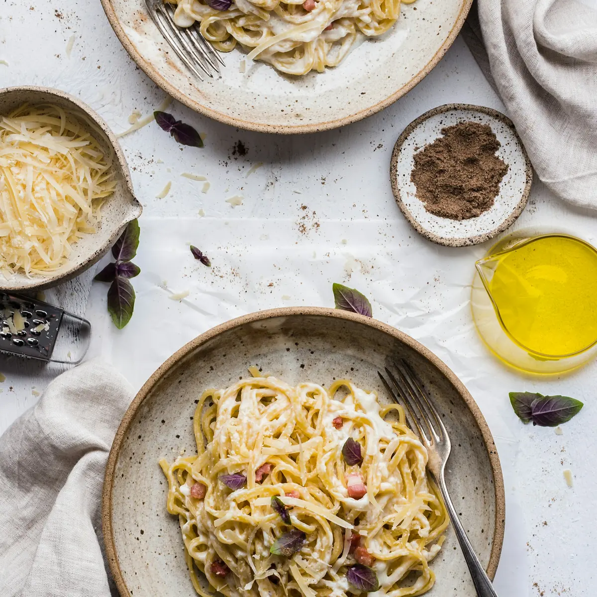
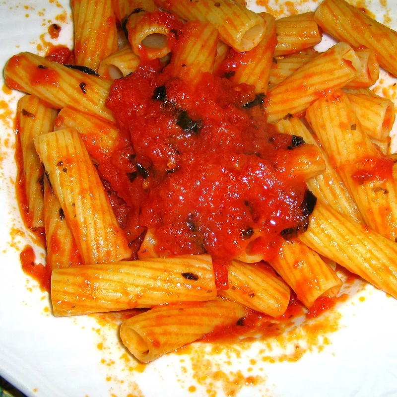
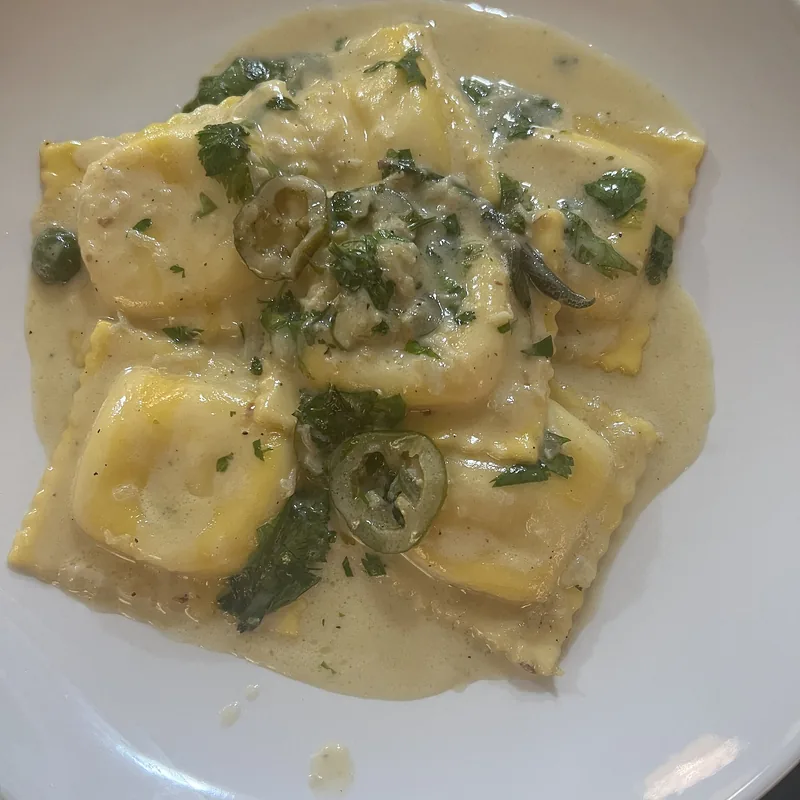
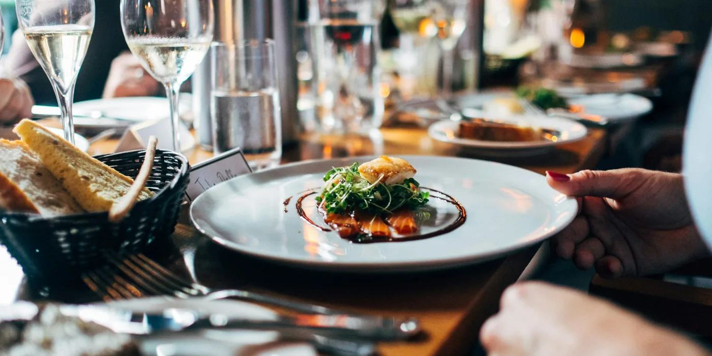

Pasta,
your way,
at lunch.
Italian cooking on Avenida Júlio de Castilhos, a few steps from São Pelegrino Church. A calm room, a pasta lunch at midday and dinner on weekday evenings.

How lunch works
Our team will walk you through it at the table. Here’s the short version, with a few of the shapes and sauces you might find on the board.


Beyond the lunch pasta you may find ravioli, steaks, fried polenta and a petit gâteau to finish. Ask what’s on today.
Hours
| Day | Lunch | Dinner |
|---|---|---|
| Monday | 11.30 – 14.00 | 19.00 – 22.00 |
| Tuesday | 11.30 – 14.00 | 19.00 – 22.00 |
| Wednesday | 11.30 – 14.00 | 19.00 – 22.00 |
| Thursday | 11.30 – 14.00 | 19.00 – 22.00 |
| Friday | 11.30 – 14.00 | 19.00 – 22.00 |
| Saturday | 11.30 – 14.00 | Closed |
| Sunday | Closed | Closed |
Lunch gets busy. Book ahead if you’re coming with a group.

On the city’s oldest avenue
Júlio de Castilhos is the avenue Caxias do Sul grew up around, back when the town was an Italian colony. We’re at number 2802, in São Pelegrino.
Av. Júlio de Castilhos 2802São Pelegrino, Caxias do Sul – RS
95010-005